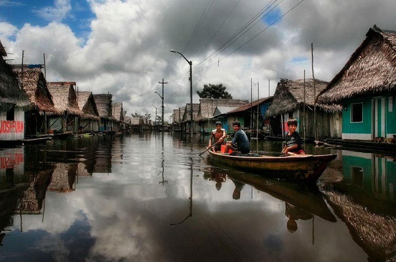
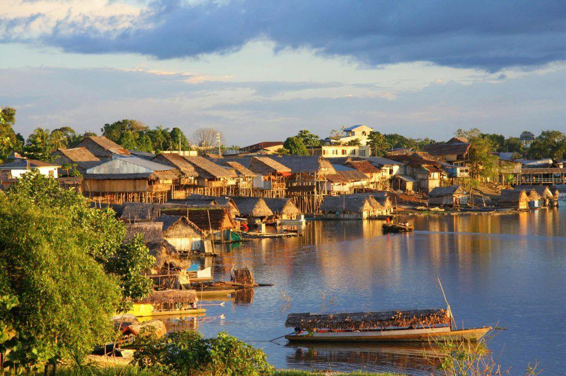
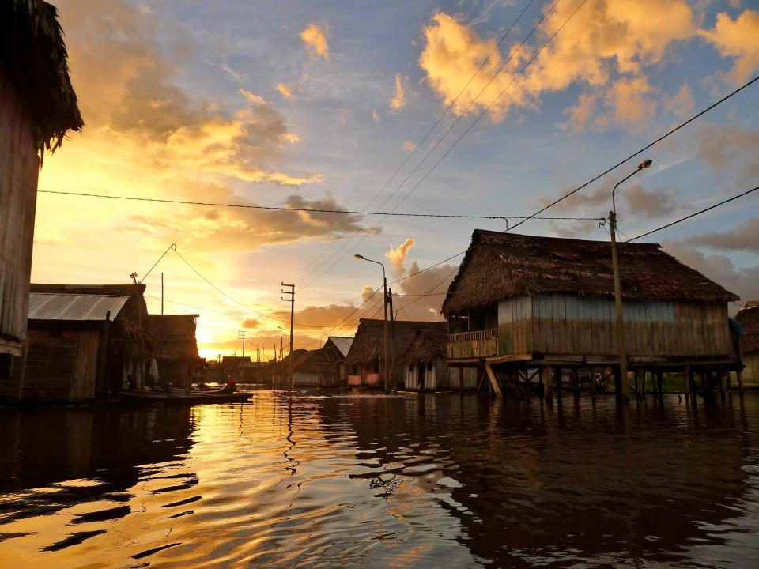

Barrio de Belén: La Venecia Amazónica
El Barrio de Belén, ubicado en Iquitos, es conocido como la "Venecia Amazónica" debido a sus casas flotantes y su peculiar estilo de vida adaptado a las crecientes del río. Es un lugar lleno de historia, cultura y comercio donde se puede observar la cotidianidad de la población local.
Historia
Belén es uno de los barrios más antiguos y emblemáticos de Iquitos. Desde su origen, ha sido un punto central para el comercio y la vida social en la ciudad. Durante las temporadas de lluvia, el nivel del agua sube, permitiendo a los residentes desplazarse en canoas entre las casas flotantes y el mercado.



Horarios y Ubicación
- Ubicación: Barrio de Belén, Iquitos, Perú.
- Horarios de visita: Acceso libre durante todo el día.
- Costo de entrada: Entrada gratuita.
Consejos para Visitantes
- Realiza un recorrido en bote: La mejor forma de conocer Belén es navegando por sus canales en una canoa.
- Visita el mercado: En el Mercado de Belén encontrarás una gran variedad de productos exóticos de la selva.
- Usa ropa cómoda y repelente: Debido al clima cálido y la presencia de insectos, es recomendable protegerse adecuadamente.
- Explora con guía local: Para una experiencia más enriquecedora, se recomienda recorrer Belén con un guía que explique su historia y cultura.
- Respeta el entorno: Es importante no contaminar los canales y respetar a la comunidad local.